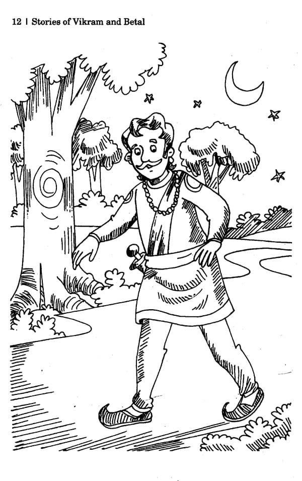

|
17. Welfare to Others
|
|---|
Paragraph 1As Vikramaaditya was walking fast toward cremation ground, Vaitaal spoke As Vikramaaditya was walking fast toward cremation ground, Vaitaal spoke again - "Vikram, You seem to be angry, but I am very happy to be with you. Now listen to another story. There was a rich man lived in Gaandhaar Desh. His name was Brahmdatt. He had only one wife and had made the rule for others also not to marry more than one wife. Women were very happy with this arrangement. Brahmdatt had a son named Somdatt. He was very handsome and unmarried. |
|  |
Paragraph 2One day Somdatt went out in the city and halted in front of a temple. After a while a beautiful woman came out of the temple. Somdatt fell in love with her. That woman also saw him, smiled and went away shyly. Somdatt came back and thought about that woman. He took the help of his friends and found out about her. She was the daughter of the king's minister and her name was Chandrasenaa. Somdatt sent his proposal to marry her to her parents but they refused it because she was already engaged to some other man, named Jayakarn. |
| Page 18 Next Page |